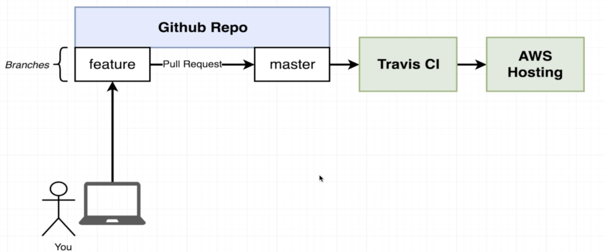

Single Container Workflow
 Travis CI for automation testing.
Dockerfile.dev for development, Dockerfile for production.
During development, to avoid rebuild of image when editing code, we use mapping to have reference in Docker container mapping to local folder. (also called docker volume)
An React Example
Step 1: Build Dockerfile.dev
FROM node:alpine
WORKDIR '/app'
COPY package.json .
RUN npm install
COPY . .
CMD ["npm","run","start"]
Step 2: Build Image
Docker build -f Dockerfile.dev .
Since the npm install will install all the nodes_modules based on package.json, we can delete the nodes_modules to reduce space.
Step 3: Run Container and Test
Docker run -p <local port>:<container port> -v /app/nodes_modules -v $(pwd):/app <Image ID>
docker exec -it <Container ID> npm run test //test
This achieve docker volume (reference) except the mapping of nodes_modules(empty in local folder). So the code change can be reflected realtime in the container.
Or use docker-compose
version: '3'
services:
web:
build:
context: .
dockerfile: Dockerfile.dev
ports:
- "3000:3000"
volumes:
- /app/node_modules
- .:/app
tests:
build:
context: .
dockerfile: Dockerfile.dev
volumes:
- /app/node_modules
- .:/app
command: ['npm','run','test']
The above docker-compose.yml file will create two container one running webapp one running test. (Both auto-update based on local file) However, under this situation docker cannot interact with the running test process.
Step 4: Serve Application in Production Environment
New Dockerfile(for production, no .dev) with below codes:
FROM node:alpine as builder //Build Phase
WORKDIR '/app'
COPY package.json .
RUN npm install
COPY . .
RUN npm run build
FROM nginx //Run Phase(default command of nginx will automatically start nginx)
COPY --from=builder /app/build /usr/share/nginx/html
Then
docker build .docker run -p <LocalPort>:80 <Image ID>(80 is default port of nginx)
Step 5: Travis-CI for Testing
sudo: required
services:
- docker
before_install:
- docker build -t yinfirefire/docker-react -f Dockerfile.dev .
script:
- docker run yinfirefire/docker-react npm run test -- --coverage
Configuration of .travis.yml. After pushing to github, Travis-CI will automatically run the test.
Step 6: Deploy to AWS Elastic Beanstalk by Travis-CI
- Create a Elastic Beanstalk Web server with Docker configuration.
- Go to IAM and add user, then grant full access of elasticbeanstalk to travis-ci by passing
ACCESS_KEYandSECRET_KEYto travis-ci environment variables. - Edit
.travis.yml
deploy:
provider: elasticbeanstalk
region: "us-west-2"
app: <app name>
env: <env is after app name>
bucket_name: "elasticbeanstalk-us-west-2-843055130065"
bucket_path: <app name>
on:
branch: master
access_key_id: $AWS_ACCESS_KEY
secret_access_key:
secure: "$AWS_SECURE_KEY"
Step 7: Expose Ports from Elastic Beanstalk
add EXPOSE 80 in Dockerfile
FROM node:alpine as builder
WORKDIR '/app'
COPY package.json .
RUN npm install
COPY . .
RUN npm run build
FROM nginx
EXPOSE 80
COPY --from=builder /app/build /usr/share/nginx/html
Step 8: Github Config
git checkout -b <branch name>to switch to a new branch.- Develop on branch, make pull request and merge after test.